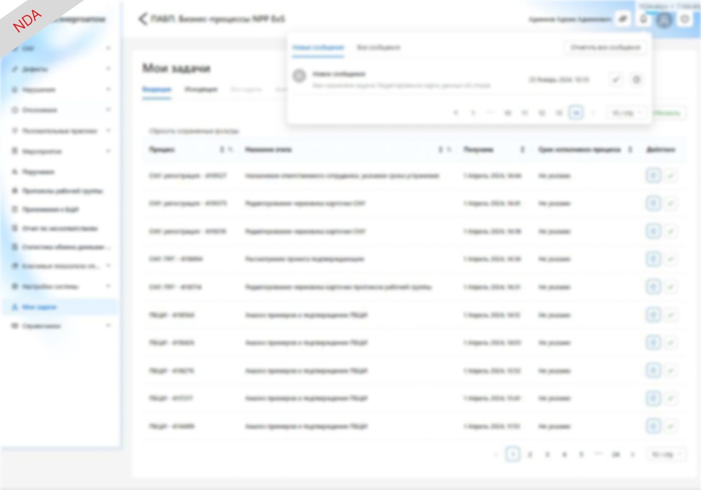
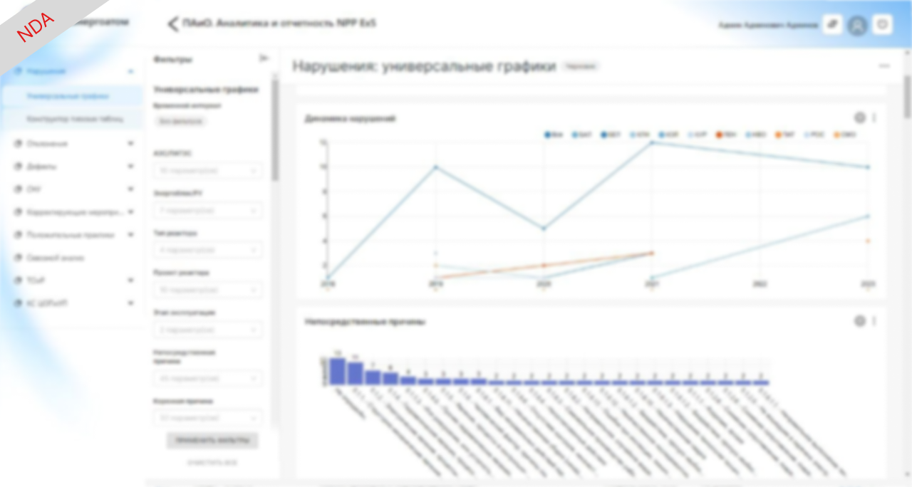
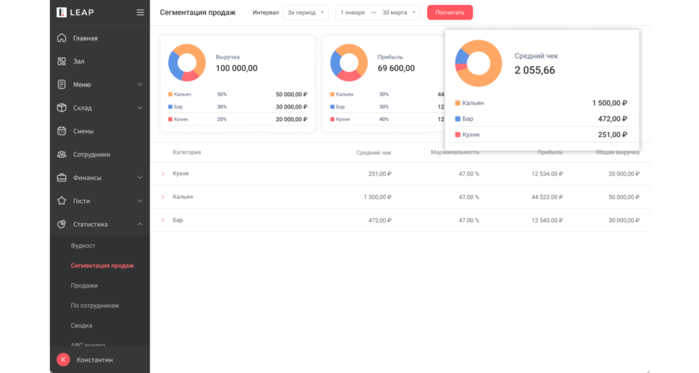
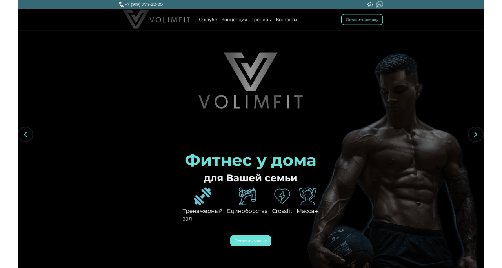
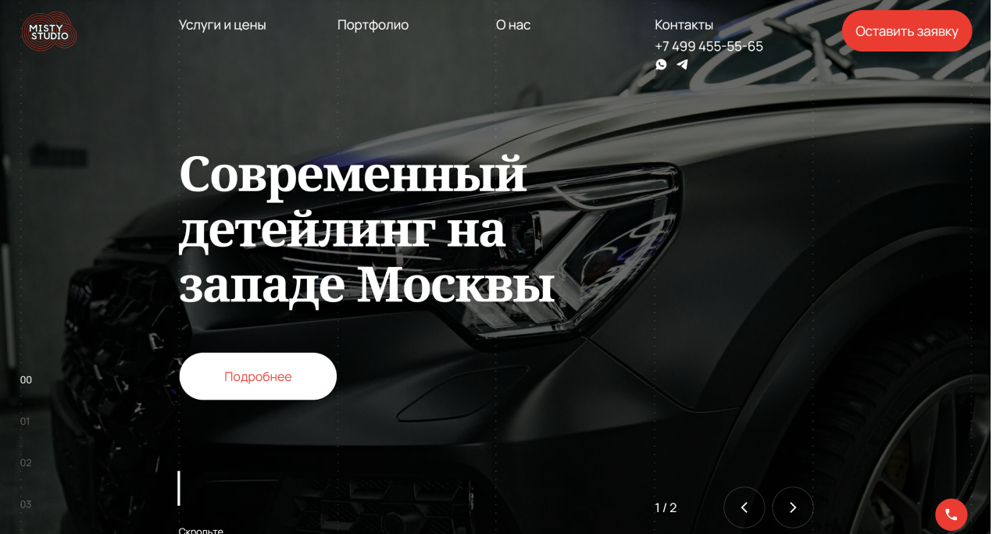
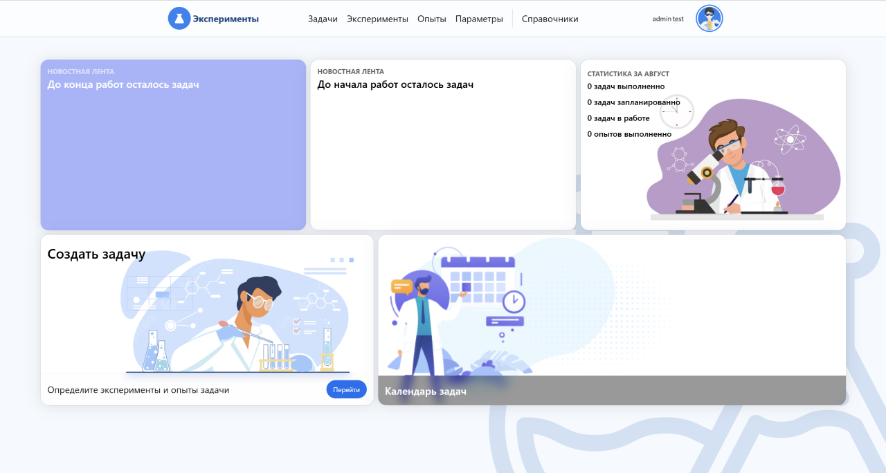

A
l
e
x
G
o
r
b
u
n
o
v
F
r
o
n
t
e
n
d
D
e
v
e
l
o
p
e
r
П
р
о
е
к
т
ы

Kommunalka
Пет-проект для расчета коммунальных услуг. Технологический стек: -Vue3 +
Express.js + MongoDB. Модуль авторизации и персонализированный круд по внесению
электроэнергии и показаний воды. На клиенте доступна опция экспорта крайнего
показания в виде png картинки.
Vue Js
Express Js
Mongo DB

Система автоматизации бизнес-процессов
Система предназначена для решения задач сбора, хранения, анализа, поиска и
распространения информации о событиях, возникающих на атомных
электростанциях.Используемые технологии: Mobx, Keycloack, Camunda.
React
Nest

Система статистического анализа и отчетности
Разработка клиентской части для интеграции отчетов с опцией филтрации путем
использованиz embedded-sdk.Используемые технологии: Apache Superset.
React

CRM-система для ресторанного бизнеса
Участие в разработке CRM-системы, реализация админ панели внесения новостей
заведений для последующего взаимодействия клиентов уже во flutter приложении.
используемые технологии : Pinia, i18n.
Nuxt

Сайт спортивного клуба
Работа под ключ, с использованием сервверного рендеринга, подключением Google
Recaptcha для формы, подготовка бекенд сервиса smtp для получения писем и отправки
в телеграмм бота.
Nuxt
Nest

Сайт детейлинга автомобилей
Сопровождение сайта, подддержка работы SEO, изменение функциональной логики
блоков, корректировка связей на стороне хедлесс фреймворка. Используемые
технологии: Strapi, Nuxt , Pinia
Nuxt

Программа записи и учета агротехнических экспериментов
Программа учитывает запись экспериментов и опытов над зерновыми культурами, имеет
функционал экспорта отчетов. Используемые технологии : React, Mobx
Nuxt

Проверка деплоя